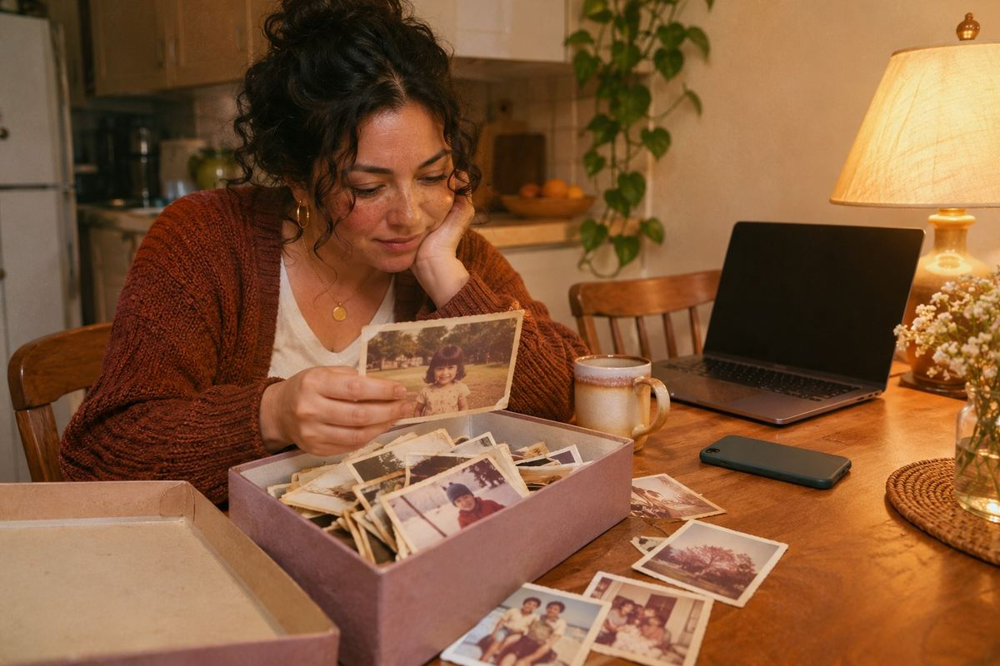

How to Make a Wedding Slideshow: Free Tools, Step by Step
Scanning, story, free tools compared, music rules, export settings and a venue test.

Short answer: To make a wedding slideshow, gather photos (scan old prints with your phone), pick the best 60 to 95 and sort them into chapters from childhood to the engagement. Build it in a free tool such as iMovie, Canva or Apple Photos at about 5 seconds a photo, changing songs about every 3½ minutes. Export a 1080p MP4 in 16:9 and test it on the venue’s screen.
Most of the work in a wedding slideshow happens before you open any app: finding the photos, scanning the ones that only exist on paper, and cutting a pile of hundreds down to a story. This guide covers how to make a wedding slideshow from start to finish, compares the free tools (with November 2026 prices for the ones that charge), and walks through the parts most guides skip, like music rules and testing on the venue’s projector.
How to make a wedding slideshow in 7 steps
- Gather the photos from your phones, your parents’ albums and your friends, and scan the prints.
- Choose a structure, usually chapters in date order.
- Pick a tool that runs on the computer or phone you already have.
- Order the photos and set the timing, about 5 seconds each.
- Add music, about one song per 3½ minutes, changing at chapter breaks.
- Export a 1080p MP4 in the shape of the screen it will play on.
- Test it at the venue and bring two backup copies.
Give yourself a few evenings for a 5- to 8-minute slideshow, and aim to finish a week before the wedding so nobody is exporting at midnight the night before.
Step 1: Gather the photos and scan the old prints
Start wide: pull everything that might make the cut into one folder, then trim later. The usual sources:
- Your own phones and cloud libraries. Search by year or by place, and favorite anything that might work.
- Parents and grandparents. Ask for childhood photos first, because those prints live in boxes and albums and someone has to dig them out.
- Friends. One shared album or upload link beats twenty separate texts. Our guide to collecting photos from wedding guests compares the options.
Scan prints with your phone
You don’t need a scanner. Google’s free PhotoScan app (iPhone and Android) walks you through a few quick shots of each print to remove the glare that ruins photos of glossy paper, then crops, straightens and rotates the result. On an iPhone, the Notes app’s Scan Documents tool works in a pinch, though it’s designed for paperwork rather than photos.
Phone scans look better with a few habits: work by a window in daylight with the overhead lights off, lay each print flat on a dark surface, hold the phone parallel to it and wipe the lens first. If prints are stuck to old album pages, photograph them in place rather than prying them off. And if someone wrote a date or names on the back, photograph that too, because it’s your caption.
If you do have a flatbed scanner, 300 dpi is plenty. That’s the Library of Congress recommendation for standard 5×7 and 8×10 photos, and the experts quoted there say that scanning an ordinary print at a much higher setting mostly shows its flaws rather than new detail.

How many photos to collect
Collect about three times what you’ll use. A sit-down slideshow of 5 to 8 minutes holds 60 to 95 photos at 5 seconds each, so a pool of 200 to 300 gives you real choices. The math, and how to cut a big pile down, is in our guide to how long a wedding slideshow should be.
Step 2: Choose a story structure
Chronological chapters work for almost everyone, because guests always know where they are in the story. A common five-part shape:
| Chapter | What goes in | Share of photos |
|---|---|---|
| Growing up | Baby photos to graduation, alternating between the two of you | About 30% |
| Before you met | College, first jobs, the friends who shaped you | About 15% |
| Together | Your first photo together, trips, apartments, pets | About 30% |
| The proposal | The place, the ring, the first calls home | About 10% |
| Your people | Family and friends, ending on photos with the guests in the room | About 15% |
Other shapes work too: past, present and future; a travel story; or a tribute to the people who raised you. Change songs at a chapter break so the switch is obvious. In a 7-minute show, growing up and before you met can share the first song, and your story together the second. For twenty more angles, from then-and-now pairs to voice notes over photos, see our wedding slideshow ideas.
Step 3: Pick a tool (free and paid options compared)
The best tool is usually the one already on your computer. Here’s how the common options compare, with US prices as of November 2026.
| Tool | Cost | Runs on | Best for | Watch out for |
|---|---|---|---|---|
| iMovie | Free | Mac, iPhone, iPad | A polished video with your own timing, titles and gentle pan-and-zoom | Apple devices only |
| Apple Photos | Free | Mac, iPhone, iPad | Quick shows from an album, with a set time per slide on iPhone or “Fit to Music” on a Mac | Fewer controls than iMovie |
| Google Photos highlight video | Free | Browser and app | A fast montage from photos already in Google Photos | Made for short highlights, not a timed story |
| Canva | Free plan; Pro is $144 a year or $18 a month | Browser, computer, phone | Designed templates, text and graphics | Some templates and audio need Pro |
| PowerPoint | Paid (Microsoft 365) | Windows, Mac | Full control over every slide, exported as an MP4 | Set the timings before you export |
| Keynote | Free | Mac, iPhone, iPad | A self-playing deck exported as a movie | In the movie export window, choose Self-Playing and set the time per slide |
| CapCut | Free; Pro is $19.99 a month or $179.99 a year | Phone, computer, browser | Beat-synced templates and vertical edits | Premium templates need Pro |
Our pick: on a Mac or iPhone, use iMovie. On Windows, PowerPoint gives you the most control if you already pay for Microsoft 365; if you don’t, Canva’s or CapCut’s free plan will do the job.
How to make a wedding slideshow in iMovie on a Mac
- Before you add any photos, choose iMovie > Settings and set Photo Duration to 5 seconds and Photo Placement to Ken Burns (a slow zoom) or Fit (still photos). The settings apply to photos you add afterward.
- Create a new movie and drag in one chapter at a time, in order.
- Add a title at the start of each chapter, and drop each song under the photos it covers.
- Choose Share, then File, and pick 1080p from the Resolution menu.
How to make a wedding slideshow on Canva
- Start a landscape video design (1920×1080) or open a wedding slideshow template.
- Put one photo on each page and set every page to 5 seconds on the timeline.
- Upload your song, or pick one from Canva’s audio library.
- Download the finished design as an MP4 video.
How to make a wedding slideshow on PowerPoint
- Put one photo on each slide. On the Transitions tab, choose Fade, set “After” to 5 seconds and apply it to all slides.
- Insert your song on the first slide and choose Play in Background on the Playback tab, so it keeps playing across slides.
- Go to File, then Export, then Create a Video, and pick Full HD (1080p).
Microsoft’s guide to turning a presentation into a video lists the export sizes (Ultra HD 4K needs Windows 10 or later) and notes that slides without their own timing get 5 seconds each. It also warns that creating the video can take hours for a long presentation, so don’t start the export an hour before you leave.
Step 4: Order the photos and set the timing
- Use 5 seconds as your baseline. Give group photos and anything with text 6 or 7 seconds; a fast, funny run can drop to 3.
- Alternate the two of you in the childhood chapter, matching ages where you can: both at five, both at graduation.
- Open and close each chapter on a strong photo. First and last frames carry the most weight.
- Stick to one transition. A short crossfade of about a second looks calm; mixing spins and wipes looks like a software demo.
- Plan for phone photos. Vertical shots leave black bars on a 16:9 screen, so pair two side by side on one slide or set them on a soft blurred background.
- Add chapter titles (“Growing up,” “How we met”) for about 3 seconds each, and caption older photos with the year so guests can place them.
- Skip the zoom on group photos, so nobody standing at the edge gets cropped out.
Step 5: Add music without licensing surprises
Plan about one song per 3½ minutes and change songs at a chapter break. A 3½-minute song covers about 40 photos at 5 seconds each, so a 7-minute slideshow needs two. Start the first photo on a downbeat, fade each song out over its last 2 or 3 seconds, and keep the volume even from track to track. Our list of 100 wedding slideshow songs by chapter has picks for every section.
Where the slideshow plays changes the rules:
- In the room. Ask your DJ or venue coordinator how they handle music, and whether the slideshow’s sound should run through their system.
- Online. YouTube, Facebook and Instagram check uploads against registered songs, and a match can get your video blocked, muted or covered in the rights owner’s ads. Our guide to posting a slideshow with copyrighted music covers each platform’s rules and where to find music you’re allowed to post.
The simple fix is two versions: the full-music cut for the room, and a version for posting that uses a royalty-free track or a song from the platform’s own music library.
Step 6: Export settings for a projector, TV or phone
| Where it plays | Shape | Export | Notes |
|---|---|---|---|
| Venue projector or TV | 16:9 landscape | 1920×1080 (1080p) MP4 | Ask whether an older projector is 4:3 |
| Large 4K TV | 16:9 landscape | 3840×2160 (4K), if your tool offers it | Much bigger file; 1080p still looks clean |
| Stories and reels | 9:16 vertical | 1080×1920 MP4 | Make a separate 15- to 60-second cut |
| Wedding website or email | 16:9 landscape | 1080p or 720p MP4 | A smaller file uploads faster |
An MP4 at 30 frames per second plays on nearly every laptop, TV and phone. Name the file so nobody grabs the wrong one, such as “Ana-and-Leo-slideshow-FINAL-1080p.mp4”, and watch the exported file start to finish before you call it done.
Step 7: Test it at the venue and pack a backup
Most slideshow problems on the day come down to a cable, the sound or a laptop that falls asleep. Ask your venue or DJ these questions a few weeks out, then do a test run on the real equipment.
- What’s the screen or projector, and is it 16:9?
- Which cable connects a laptop (often HDMI), and do you need an adapter for yours?
- How does the laptop’s sound reach the speakers: through the DJ’s mixer, the venue’s system or a separate speaker?
- How bright is the room at that time of day? Projected images wash out in daylight, so a big TV can work better at an afternoon reception.
- Who presses play, and on what cue?
On the day, bring three copies: the file on the playback laptop’s desktop, a USB drive and a cloud link or phone copy. Turn off notifications, screen savers and sleep, plug the laptop into power, and set the player to stop on the last frame instead of jumping back to the desktop.
Take a 10-second test clip with music to the venue test run. It shows you the sound level and whether the picture fills the screen in seconds, before you sit through a full export.
How to make a short wedding recap reel for Instagram or TikTok
The slideshow tells the story up to the wedding; you may also want a short vertical video of the day itself. Mobile editors like CapCut export vertical 9:16 video, or you can let your guests’ photos build one for you. Our guide to making an event recap video covers the shot list and pacing.
Let the guests’ photos make it with Filmsera
Filmsera is a shared disposable camera app for iPhone. You create a film for the wedding, and guests join by scanning the QR code on your table cards, either in the free app or from their phone’s browser with no app or account. Everyone’s photos stay hidden until the reveal time you set, then the whole roll appears for everyone at once, each photo tagged with who took it, and a vertical recap reel builds itself with cuts snapped to the beat.
For a reveal at the next day’s brunch, choose Custom and enter the time. Each preset (Tonight, Tomorrow or In 3 days) develops at 9 p.m.
The recap is a 9:16 reel that usually runs 10 to 30 seconds, so it complements the story slideshow rather than replacing it. It auto-picks the keepers from up to 40 photos plus video clips. You choose from 9 free templates (one is called Wedding Editorial) and 6 built-in royalty-free songs, or use your own song file or a downloaded, DRM-free song from Apple Music, then save the reel to Photos or share it through the iOS share sheet.
The honest limits: you host from the iPhone app, guests who join in the browser take photos only, and a free film covers up to 10 guests, so most weddings need a one-time pass for that film. Free exports are 480p with a Filmsera watermark; HD 1080×1920 without the watermark needs Filmsera Pro or a film pass. On a free film, photos stay on Filmsera’s servers for 30 days after the reveal, so save the ones you want. Setup details are on our Filmsera for weddings page.

Filmsera gathers every guest’s photos in one film and builds a beat-synced vertical recap the moment it develops. Get Filmsera on the App Store
FAQ
How long does it take to make a wedding slideshow?
Plan on roughly 6 to 7 hours over a few evenings for a 7-minute show. Here’s the rough math: about 2 hours gathering photos, 40 minutes scanning 80 prints at 30 seconds each, an hour choosing, 2 to 3 hours building and timing, and 30 minutes for a test run. Scanning and choosing grow fastest with a big family archive, so start those first.
Can I make a wedding slideshow on my phone?
Yes. On an iPhone, iMovie is free and its Magic Movie feature builds a first draft you can edit, and CapCut runs on iPhone and Android. As of November 2026, the iPhone Photos app can also play an album as a slideshow with your choice of song, time per slide and looping, and AirPlay it to a TV. For a long, carefully timed show, a computer is still easier.
What is the best free wedding slideshow maker?
On a Mac, iPhone or iPad, use iMovie: it’s free, handles titles and music well and exports in HD. On Windows or a Chromebook, start with Canva’s or CapCut’s free plan, and check that the template you like isn’t marked as a paid one. For a slideshow that only loops in the background, an Apple Photos slideshow or a Google Photos highlight video is the fastest option.
Should a wedding slideshow have music if we have a DJ?
For a sit-down showing, yes: ask the DJ to fade the room music, then play the slideshow’s sound through their system. For a slideshow that loops during cocktail hour or dinner, WeddingWire’s slideshow guide suggests leaving it music-free so the DJ or band can set the mood. Tell your DJ either way so they can plan the handoff.
Who should run the slideshow at the reception?
One person who isn’t you: usually the DJ, the venue’s AV contact or a friend who is comfortable with laptops. Give them the file on a USB drive, a cloud link, the exact cue (for example, right after the toasts) and the coordinator’s number. Ask them to do the test run with you, on the same laptop.
How do we share the slideshow with guests after the wedding?
Send a link in your thank-you texts or post it on your wedding website. If the slideshow uses commercial songs, expect copyright claims on public video platforms, so a version with royalty-free music is safer to upload. For Instagram or TikTok, a short vertical cut of 15 to 60 seconds usually works better than the full room version.
Written by the Filmsera team
Filmsera is a shared disposable camera app for iPhone: create a film for your event, let guests join by QR code from the app or their phone's browser, and open the whole roll together at the reveal. Download on the App Store →
Photos in this article are illustrations created for Filmsera, not customer photos. App screenshots are from Filmsera on iPhone.